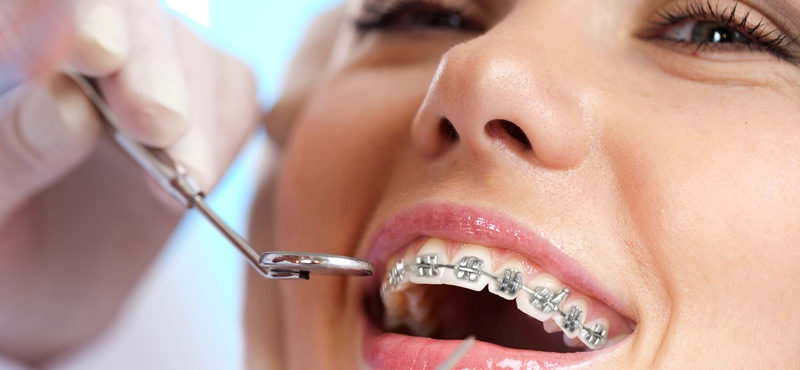

ORTODONTİ NEDİR
Ortodonti; dişlerin, çene kemiklerinin ve kafa kemiklerinin birbiri ile uyumunu sağlayan, diş hekimliğinin bir uzmanlık alanıdır.
ORTODONTİK TEDAVİ genellikle braket gibi düzeltici aparatlar kullanımı ile dişlerin çene kemiğinde hareket ettirilerek düzeltilmesi amaçlanır. Ayrıca çene kemiklerinin de birbiri ile uyumu sağlanır. Üst çene ve alt çene, diş kavisleri, dişleri destekleyen dokular, dudaklar, yanaklar ve dil ortodontik tedavinin kapsamı içinde yer alır. Ortodontik tedavi sadece estetiğe yönelik bir tedavi olarak değerlendirilmemelidir. Çapraşıklıktan dolayı oluşabilecek diş eti hastalıkları, diş çürümeleri, çiğneme ve konuşme bozuklukları, eklem problemlerini de engelleyip; dişlerimizin ve çenelerimizin doğru pozisyonlarda birbirleriyle fonksiyon görebilmelerini sağlayan bir tedavi şeklidir.
ORTODONTİK TEDAVİYİ KİM YAPAR?
Ortodonti diş hekimliğinin uluslararası platformda kabul görmüş uzmanlık alanlarından biridir. Diş hekimliği eğitimini bitirdikten sonra ortodonti dalında uzmanlık veya doktora yapmış kişiler (ortodontist veya ortodonti uzmanları)bu tedaviyi yapmaya tam yetkili kişilerdir.
ORTODONTİK TEDAVİNİN ZAMANLAMASI

KORUYUCU ORTODONTİ
Tüm tıp dallarında olduğu gibi, ortodontide de temel prensip, bozukluğun oluşmamasıdır. Bu amaçla alınan tedbirlerin tamamına koruyucu ortodonti denir. Koruyucu ortodontik tedavilerin başlıcaları diş çürüklerinin önlenmesidir. Süt dişleri altlarından gelen dişlerin yerini korudukları için çok önemlidir. onlarda oluşacak madde kayıpları bu yerin daralmasına ve sürekli dişlerin daha küçük bir kavise çapraşık dizilmesine neden olacaktır. Dolayısı ile süt dişleri ağıza sürmelerinden itibaren korunmalıdır, olası kayıplarında da yer tutucu ile yerleri muhafaza edilmelidir.
DURDURUCU ORTODONTİ
Durdurucu ortodontiK tedavide, oluşmakta olan bozukluğun, etkeninin ortadan kaldırılması yoluyla erken yaşta daha kapsamlı bir tedaviye gerek kalmaması için yapılan tedavidir. Parmak emme, ağız solunumu gibi kötü alışkanlıkların bırakılması, süt dişi tedavilerinin ve gereken yer tutucuların yapılması bu tedavinin konularıdır.
DÜZELTİCİ ORTODONTİ
Ortaya çıkmış olan ortodontik bozuklukların, braketler, hareketli aygıtlar, fonksiyonel aygıtlar veya ortognatik cerrahi ile düzeltildiği aktif tedavi safhasıdır.